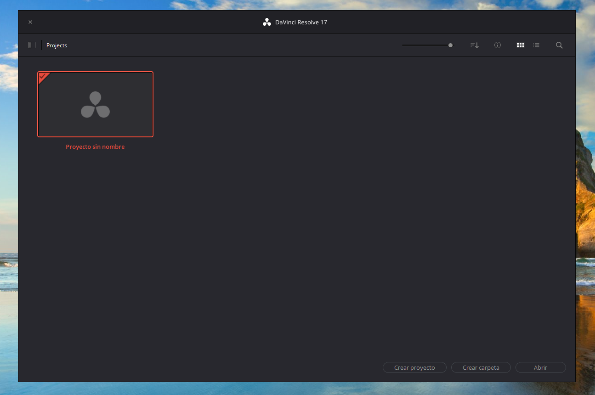

DaVinci Resolve
Dirigido al grupo de generacion espontanea TomaUno
¿Por qué DaVinci?
Hay diferentes razones para emplear DaVinci frente a otros softwares de edición de video. En este caso, me gustaría resaltar las siguinetes:
- Software gratuito (aunque limitado).
- Versatilidad en edición, tonelaje y composición (Fusion)
- Estandar cinematográfico de edición de video
- Gran cantidad de tutoriales en línea
Aqui dejo una lista de tutoriales que son mucho mejores
que esta mini introducción:
Descarga y versión
Davinci ofrece una versión gratuita con limitaciones que para nuestro uso será suficioente. Emplearemos las versiones "NO ESTUDIO" y por lo general la utlima (DaVinci Resolve 17).
Organización de material
En Toma Uno se empleará un disco duro donde se almacenarán todos los videos y archivos usados en la edicion junto a los proyectos "davinci" del siguiente modo:
DiscoDuroToma1/
├──proyectos
│ ├── nombre_proyecto_xx_xx_xxxx/
│ │ ├── imagenes/
│ │ ├── documentos/
│ │ ├── project_files/
│ │ ├── musica/
│ │ ├── renderizado/
│ │ └── raw_footage/
│ └── nombre_proyecto_yy_yy_yyyy/
│ ├── imagenes/
│ ├── documentos/
│ ├── project_files/
│ ├── musica/
│ ├── renderizado/
│ └── raw_footage/
├── DaVinci/
│ └── Resolve Projects/
│ ├── .../
│ └── .../
├── 01.imagenes_y_logos/
└── README.md
nombre_proyecto_xx_xx_xxxx: Carpeta del proyecto con la fecha de creación.
DaVinci: Estas carpetas contendrán los database. Serán administrados por Davinci Resolve, por lo que no requiere una explicación muy extensa. No debe ser alterada.
Para crear estas carpetas de forma rapida se puede emplear el siguiente .bat
Gestor de proyectos DaVinci
Para trabajar de forma comoda e independiente del
disco duro de TomaUno, los proyectos locales se guardarán
en carpetas bien localizadas y luego se adjuntará el
proyecto .drp (formato de DaVinci).

DaVinci almacena todos los proyectos en una misma base de datos que se encuentra en el ordenador. El proyecto es tan solo el archivo .dpr y no los video o materiales empleados en la edición. Es posible crear subcarpetas dentro de esta base de datos con el boton inferior Crear Carpeta .
Al iniciar davinci se abre el gestor de proyectos.
En el se mostrarán todos los proyectos que creemos y podremos
organizarlos, guardarlos en carpetas, archivarlos o exportarlos.

Entorno DaVinci
- Medios (importar carpetas, ordenar contenido)
- Montaje
- Edición (añadir al timeline, inspector, effect library)
- Fusion
- Color
- Fairlight
- Entrega